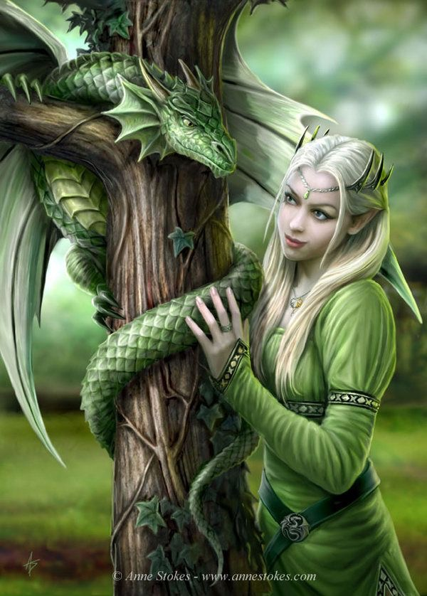
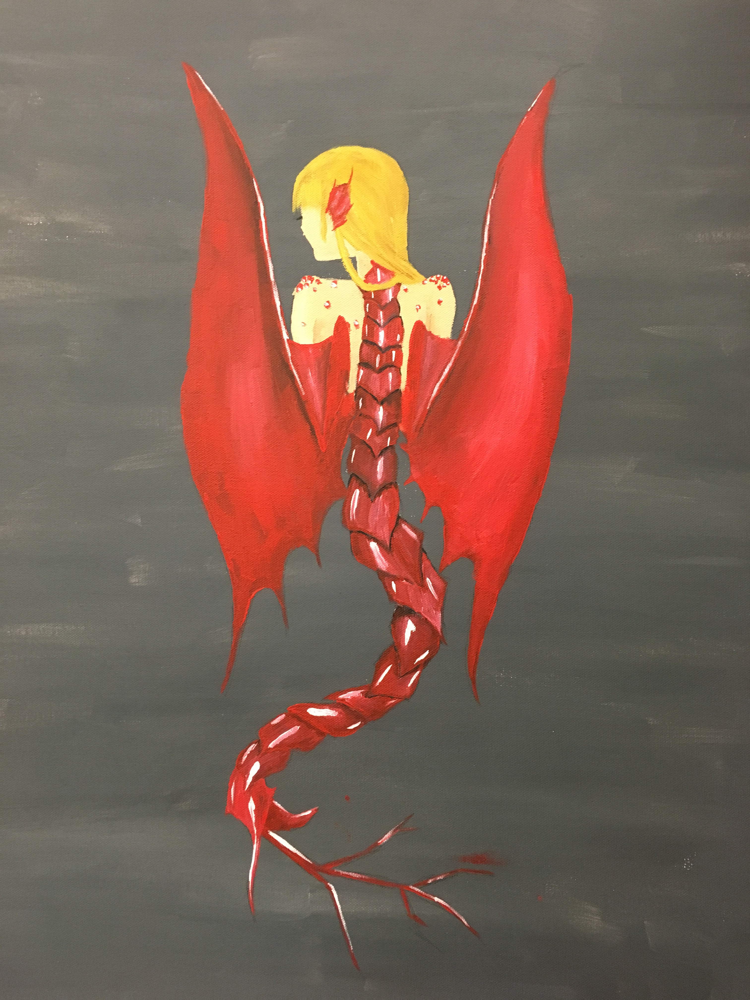

Mederi History 101
The idea behind a Mederi was introduced back in the dark ages when witches and wizards weren't in hiding. A wizard by the name of Sloane Brocklehurst dabbled in dark magic and thought it would be an interesting experiment to combine a magical beast and a witch creating a perfect protector and healer for wizarding kind.
After years of experimenting with level one magical beasts Sloane Brocklehurst finally created the first Mederi by using a unicorn and one powerful witch. The process in which to create this being Mr. Brocklehurst had to sacrifice both the witch and unicorn before resurrecting the essence of the unicorn and placing it into the unconiscous witch body. Within moments the witch woke up with new found beauty and the eyes of the unicorn blazing through her human ones forcing both souls to share one body.
Throughout the middle ages Mederi had been created until the magical government caught the witches and wizards preforming the ritual and banned the practice. However the Mederi race still lived on since their masters forced them to mate and have offspring. Being born a Mederi these offspring gained traits from each parent which helped depict their beast once they reached an age between nine and ten years of age.
Created vs. Born
A Mederi that is created is put in an awkward situation since he or she is bonded to their creator/master and has to obey their command. If commanded to do somthing the Mederi is forced and compelled to execute the order. If the Mederi refuses the command he or she will feel a burning sensation that will not dissipate until she executes the task. Though after a long time of refusing the command it becomes less and less like a task he or she has to do as the burning becomes a tickle in the back of there head. Like Mederis that are born these Mederi can create bonds with people.
A Mederi that is born has the ability to chose who they bond with but with each bondmate they grow attached to the more power the Mederi can draw from them. Though there will some bonds that the Mederi can't change which is basically their one true bondmate. This bondmate is someone the Mederi can never hurt, calms at their voice and is very much compelled to do their bidding. However, if any bondmate suddenly drops dead the bond is shattered leaving the Mederi weak and vunurable. Though in a couple of weaks the Mederi is able to return to their normal power.
Known Mederi
- Gwendolyn Presley (Dragon)
- Phoenix Caine (Phoenix)
- Mandy Brocklehurst (Basilisk)
- Cassandra Presley (Chimara)
- Mason Brocklehurst (Hydra)
- Maisy Presley-Brocklehurst (Adarna)